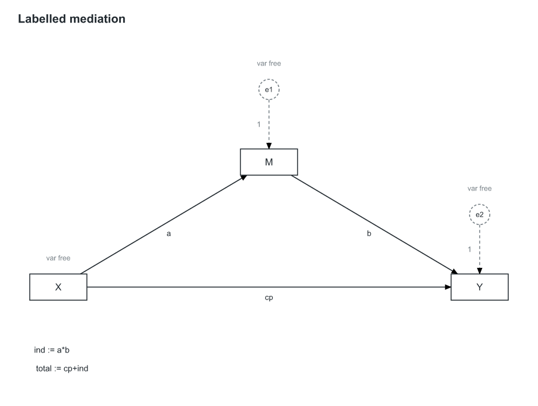
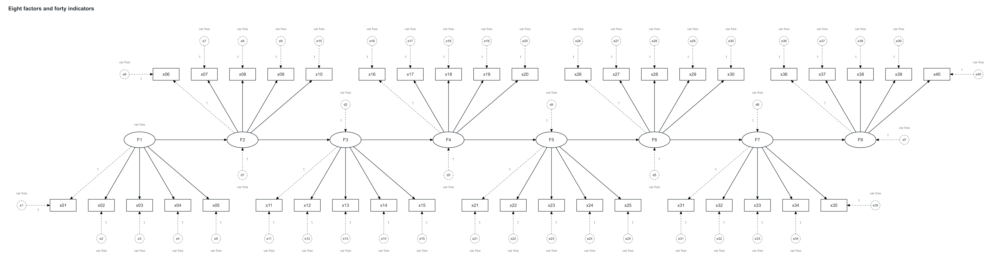
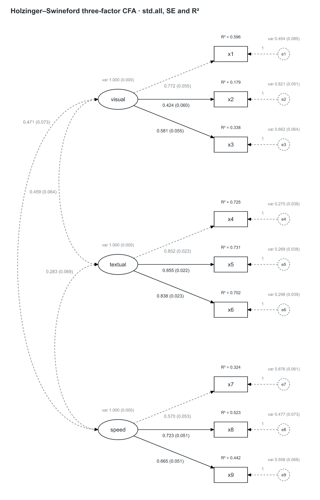
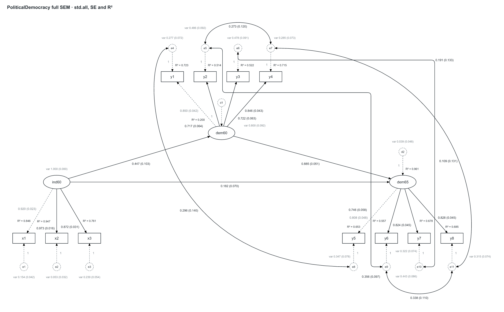
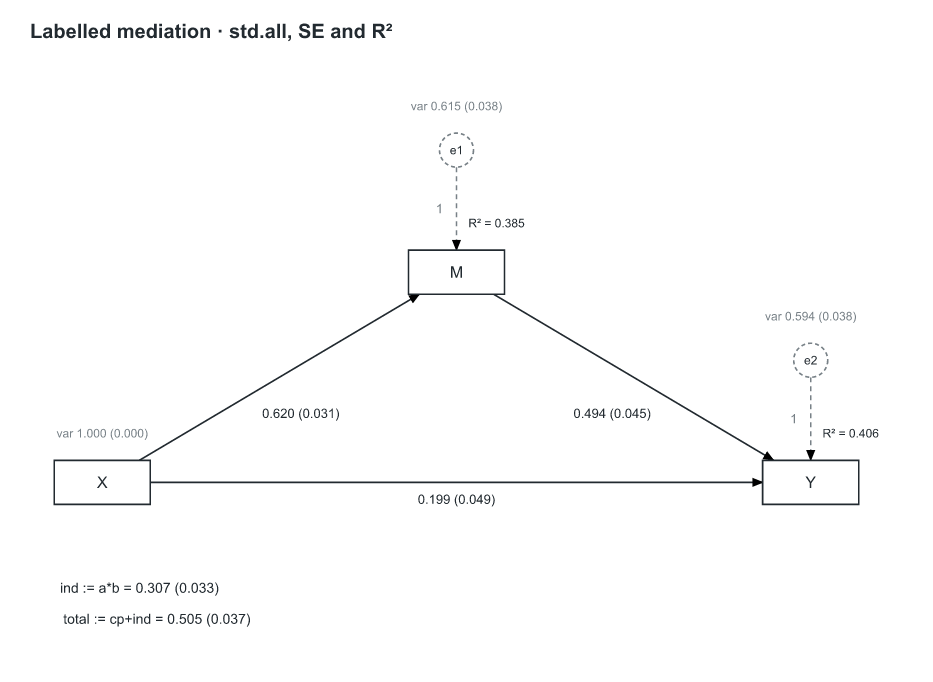

Holzinger–Swineford three-factor CFA
21 nodes · 24 parameter rows · model specification

All seven fixed models, followed by three fitted diagrams. These images come from the production layout/SVG modules with no per-fixture positions. Fitted values and standard errors come from the native R reference run; the same adapter was checked in webR/WASM. Click a figure for its full-size SVG.
21 nodes · 24 parameter rows · model specification
27 nodes · 34 parameter rows · model specification

5 nodes · 8 parameter rows · model specification

25 nodes · 25 parameter rows · model specification

14 nodes · 27 parameter rows · model specification

6 nodes · 10 parameter rows · model specification

95 nodes · 95 parameter rows · model specification

21 nodes · 24 parameter rows · fitted with lavaan, std.all + SE + R²

27 nodes · 34 parameter rows · fitted with lavaan, std.all + SE + R²

5 nodes · 8 parameter rows · fitted with lavaan, std.all + SE + R²
